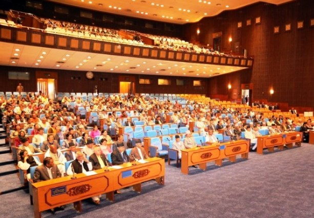
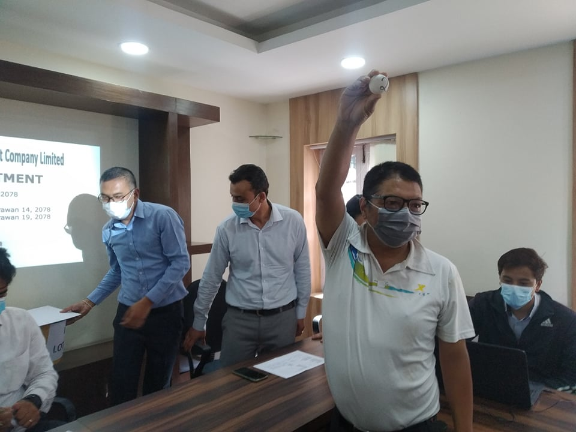

अर्थमन्त्रीले आज संसदमा श्वेतपत्र प्रस्तुत गर्दै, कोरोना भाइरसले अर्थतन्त्रमा पारेको असरका बारेमा श्वेतपत्र केन्द्रीत

अर्थमन्त्री जनार्दन शर्मा ‘प्रभाकर’ ले आज १ बजे संसदमा श्वेतपत्र प्रस्तुत गर्ने भएका छन् । मुलुकको वर्तमान आर्थिक अवस्था र आगामी दिनामा चाल्नु पर्ने कदमका बारेमा श्वेतपत्र केन्द्रित भएको अर्थमन्त्रालयको भनाइ छ ।अर्थमन्त्रीमा शर्मा नियुक्ति भएलगत्तै गरेको पत्रकार भेटघाट कार्यक्रममा मुलुकको अर्थतन्त्रको यर्थाथ चित्रण सहित आगामी दिनमा चाल्नु पर्ने कदमका बारेमा श्वेतपत्र सार्वजनिक गर्ने घोषणा गरेका थिए ।
अर्थमन्त्री शर्माले श्वेतपत्र तयार पार्नका लागि योजना आयोगका पूर्वउपाध्यक्ष डा. मीनबहादुर श्रेष्ठ र अर्थशास्त्री डा. सुरेन्द्र उप्रेतीको समूहलाई जिम्मेबारी दिएका थिए । उक्त समूहले रात दिन लगाएर श्वेतपत्र तयार पारेपछि अर्थमन्त्रीले आज प्रतिनिधिसभामा प्रस्तुत गर्न लागेको हुन् ।
केही साता अघि पत्रकारसँग कुरा गर्दै अर्थमन्त्री शर्माले, ‘श्वेतपत्र जारी गर्दा विगतको नेतृत्वलाई गाली गरेर हिरो बन्नु नभएको’ बताएका थिए ।
उनले आफूले तयार पार्ने श्वेतपत्रले कसैको कमजोरीलाई उजागर गर्ने नभएर अर्थतन्त्रको यथार्थ चित्रण मात्र प्रस्तुत गर्ने बताएका थिए । अर्थमन्त्री शर्माले कसैको अबमूल्यन गर्ने काम नगर्ने स्पष्ट गरिसकेका छन्
उनले श्वेतपत्रले यथार्थ चित्रण गर्ने बताएका थिए । राम्रो कि नराम्रो मुल्यांकन गर्न जिम्मा सर्वसाधारणको हुने जिकिर पनि अर्थमन्त्री शर्माले गरेका थिए ।
पूर्व अर्थमन्त्री डा. युवराज खतिवडाले आफूलाई सुविधा हुने किसिममा तथ्यांकहरु प्रयोग गरेर श्वेतपत्र ल्याएपछि विवादमा मुछिएका थिए । तर, अहिले अर्थमन्त्री शर्माले त्यसबाट पाठ सिकेर विवादरहित श्वेतपत्र ल्याउने तयारी गरेको अर्थमन्त्रालयको दावी छ ।
कारोनाले अर्थतन्त्रमा यति असर गर्यो, लगानीको माहोल किन भएन्, रेमिटयान्समा कस्तो असर पर्यो भन्ने जस्ता बिषयलाई समेटेर अर्थमन्त्रीले श्वेतपत्र ल्याउने भएका छन् ।
बास्तमा श्वेतपत्रको फोकस कोभिड १९ ले गरेका असरहरु र त्यो असरले पारेका कुराहरुलाई संबोधन गर्न नसकेका आयामहरु जसलाई आगामी दिनमा सरकारले संबोधन गर्ने प्रयत्न श्वेतपत्रमा गरिएको अर्थमन्त्रालयको भनाइ छ ।
मैलुङ खाेलाको आईपीओ बाँडफाँट, भाग्यमानी ६ जनाले पाए ११ कित्ता

मैलुङ खोला जलविद्युत कम्पनीले सर्वसाधारणमा बिक्रीमा ल्याएको प्राथमिक शेयर (आईपीओ) आज (साउन २६ गते) मंगलबार बाँडफाँड भएको छ। कम्पनीको बिक्री प्रबन्धक सिद्धार्थ क्यापिटलले सोमबार प्रिअलटमेन्ट सकेर यस दिन बाँडफाँट गरेको हो।क्यापिटलका अनुसार कम्पनीको आईपीओमा कुल २० लाख ६७ हजार ९६७ जनाले आवेदन दिएका थिए। जसमध्ये २ हजार ८४३ जनाको आवेदन रद्द भएको छ भने बाँकी २० लाख ६५ हजार १२४ जनाको आवेदन स्वीकृत भएको छ। स्वीकृत आवेदनमध्ये ६८ हजार ४७४ जनालाई १० कित्ताका दरले शेयर बाँडफाँट गरिएको छ। जसमध्ये ६जनाले थप १ कित्ता अर्थात कुल ११ कित्ता शेयर प्राप्त गरेका छन्।
कम्पनीले साउन १४ बिहीबारदेखि प्रतिशेयर १०० अंकित मूल्यमा ७ लाख ३६ हजार २८६ कित्ता शेयर निष्काशनमा ल्याएको थियो। त्यसमध्ये २ प्रतिशत अर्थात १४ हजार ७२६ कित्ता शेयर कर्मचारीहरुलाई र ५ प्रतिशत अर्थात ३६ हजार ८१४ कित्ता शेयर सामूहिक लगानी कोषका लागि छुट्याइएको छ । त्यसपछि बाँकी रहने ६ लाख ८४ हजार ७४६ कित्ताका लागि सर्वसाधारणलाई बाँडफाँड गरेको हो।
हाल कम्पनीको चुक्ता पूँजी २९ करोड ४५ लाख १४ हजार ४०० रुपैयाँ रहेको छ। सर्वसाधारणमा आईपीओ बिक्री गरेपश्चात कम्पनीको चुक्ता पूँजी ३६ करोड ८१ लाख ४३ हजार रुपैयाँ पुग्नेछ।